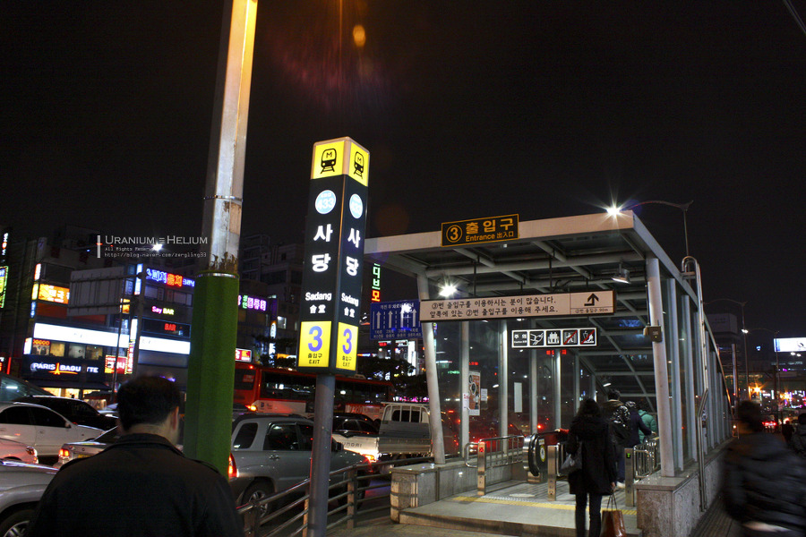

CIVIL WAR
서대문 vs IT COMMING SOON
6월~7월에 서대문과 IT의 사당 하룻밤 펍 파티가 예정되어 있습니다
다양한 게임 외 메인 행사 스트림, 그 외 애프터파티까지 준비중이니 많은 참여 부탁드립니다
(추후 확정사항은 업데이트될 예정입니다)
WHEN
6월 ~ 7월 예정 (미정)
WHERE
사당 내 펍 예정 (미정)

WHO
서대문과 IT 본부 22사번
WHY
친목도모
HOW
서대문 vs IT 팀으로 나뉘어 복면가왕, 별명, 노래 맞추기, 양주 등 상품 예정